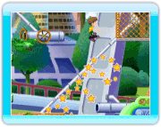
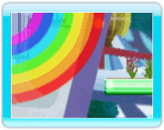
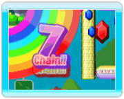
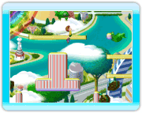

12
テクニック
連鎖ドロップ

レインボードロップは接している複数の虹を一度に崩して広範囲に攻撃することができます。
ドロップした方向(上/下)によってそれぞれ連鎖する方向も異なります。
チェイン

敵を倒してから、一定時間内に
さらに敵を続けて倒すとチェインが成立します。

７チェインまで繋がると一気に上へジャンプする「レインボージャンプ」レベルが１レベル
上がります。
レインボージャンプ

レインボージャンプはレベルが１以上のときにWiiリモコンを上に振ると発動し、画面内のすべての敵を倒して一気に大ジャンプします。
レインボージャンプレベルは７まであり、レベルが貯まるほどジャンプする距離が伸びます。